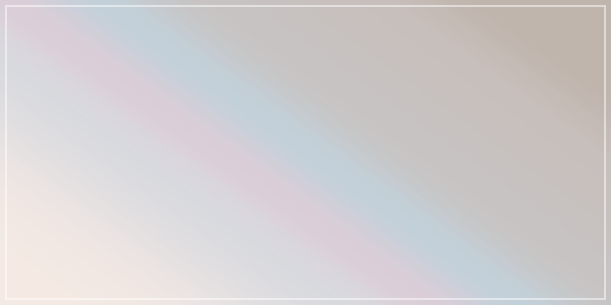
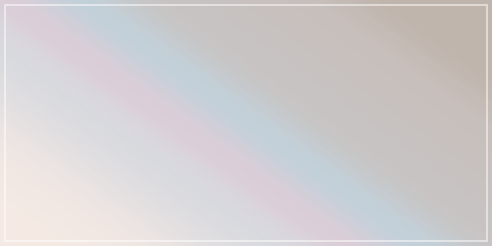

透明感とシンプルを目標にしたテーマです。
PCなどでは本文の左側と被るので、タイトル画像は淡い色彩のものが向くかもしれません。
タイトル画像をよりしっかり見せたいときには、sectionにclass="none"を付けると、テキストエリアの背景を透過します。（タイトル画像:
jay mantry）
- CSS差し替え
- テンプレート公開
見出し２
見出し３
見出し４
見出し５
見出し６
リンク リンク リンクmarkで下線を引きます。
- リスト１
- リスト２
画像
imgにclass="modal-window"を付けると、クリック時にモーダルウィンドウで表示します。
imgにclass="trim"を付けると、横いっぱい・縦最大300pxでトリミングして表示します。縦横比に差がある画像向け。
それ以外の場合、大きい画像は最大縦300pxで表示されます。
 
